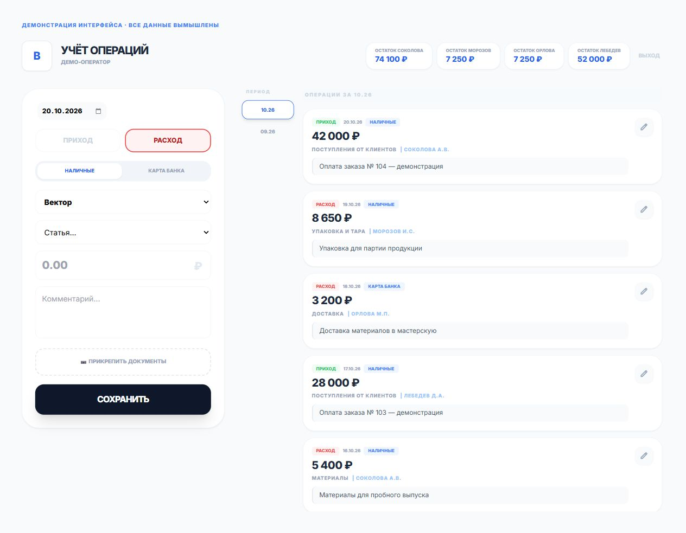
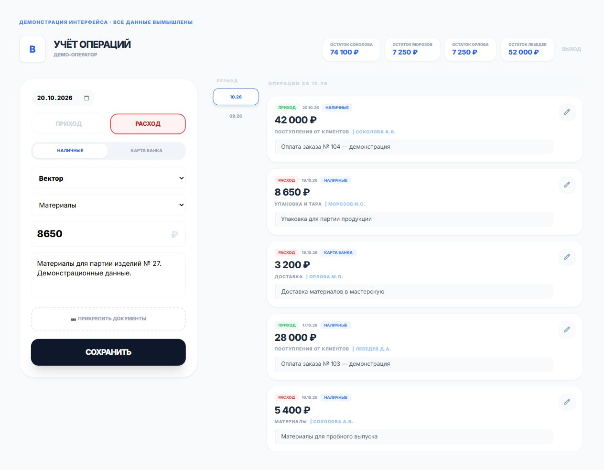
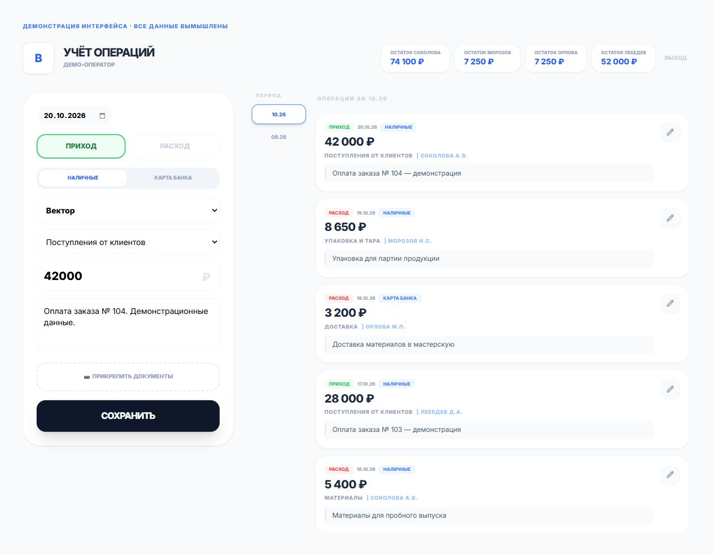
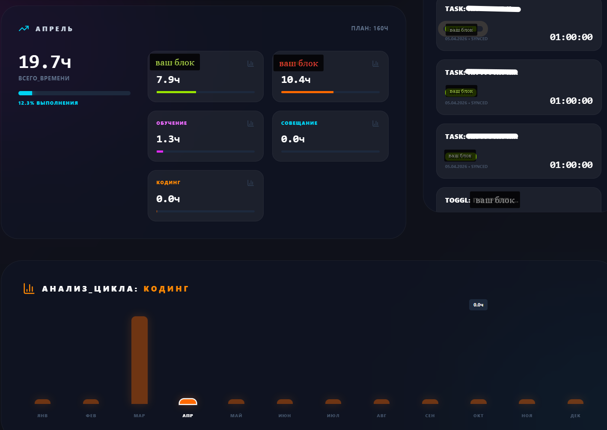
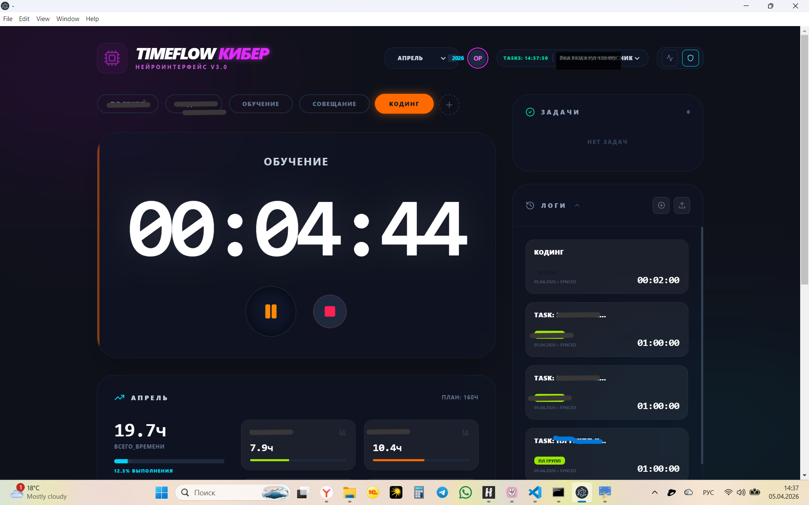

Чтобы узнать, как идут дела, приходится собирать данные из пяти таблиц?
Создам единый экран с нужными показателями, статусами и отклонениями — чтобы вы могли быстро увидеть ситуацию без ручного сведения отчётов.
Екатерина Колесникова
Меньше ручной работы.
Больше порядка в делах.
Создаю приложения, которые помогают быстрее готовить отчёты, рассчитывать заказы и контролировать работу команды.
Знакомые задачи
Можно начать с одного отчёта, расчёта или процесса. Разберусь, как устроена работа, и создам инструмент под вашу задачу.
Создам единый экран с нужными показателями, статусами и отклонениями — чтобы вы могли быстро увидеть ситуацию без ручного сведения отчётов.
Создам инструмент, который объединяет данные, выполняет повторяющиеся расчёты и показывает расхождения для проверки.
Объединю источники данных и настрою единые правила расчёта в одном приложении.
Разработаю калькулятор: выбираете материалы, объём и параметры — получаете себестоимость, цену и маржу по согласованным правилам.
Создам приложение со статусами, сроками и ответственными, где сотрудники обновляют данные, а руководитель видит ход работы.
Примеры работ
В портфолио используются обезличенные демонстрационные данные.
Данные из разных систем · Аналитика · ИИ
Чтобы увидеть результат, приходится открывать 1С, несколько таблиц и другие программы? Разработаю дашборд, который объединит нужные данные и покажет, что происходит в бизнесе.
Источники — 1С, Excel, Google Таблицы, CRM и другие программы. Можно начать с готовых выгрузок, а затем настроить обновление данных через доступные интеграции.
В галерее — три концепта на вымышленных данных и исходный пример дашборда. Переключайте изображения и нажмите на любое, чтобы рассмотреть в полном размере. Источники данных, показатели и функции ИИ подберём под вашу задачу.



1 / 3 · Остатки и история операций
Веб-приложение · Telegram-бот · Google Таблица
Кто получил деньги, на что потратил и где подтверждающие документы? Приложение собирает операции в одном месте, чтобы не восстанавливать их по сообщениям и разрозненным таблицам.
Это связка веб-приложения, чат-бота в Telegram и Google Таблицы. Операции из приложения сохраняются в таблицу и загружаются из неё для просмотра истории. Telegram-бот принимает данные и отправляет уведомления — привычный мессенджер становится частью рабочего процесса.
На трёх экранах — вымышленные компании, сотрудники и суммы. Под ваш процесс можно настроить справочники, состав полей и подключение данных.
Ввод операций, документы, остатки и история по месяцам.
Хранение записей и работа с данными в привычном формате.
Принимает данные и отправляет уведомления.
Компоненты одной системы учёта: сотруднику удобно вносить данные, а записи доступны для дальнейшей работы. Подобную связку можно разработать под ваш процесс.
Сотрудник выбирает дату, приход или расход, способ оплаты, компанию и статью. Указывает сумму и поясняет назначение платежа. Запись из приложения передаётся в Google Таблицу.
К записи можно прикрепить чек или другой подтверждающий документ. Комментарий и файлы помогают разобраться в платеже позже.
Операции доступны по месяцам. Запись можно открыть для исправления. Наличные остатки рассчитываются от начальных сумм с учётом поступлений и расходов наличными.


Команда и проекты
Рабочее приложение с таймером, проектами, задачами, журналом записей и статистикой за период.
Попробуйте в деле
Измените параметры заказа — результат пересчитается сразу. Это демонстрация приложения, которое можно адаптировать под ваши материалы, нормы и правила расчёта.
Затраты на единицу: —
Цена покрытия затрат: — / шт. (округлена вверх до копейки).
Затраты = объём × (материалы + работы) + накладные.
От файлов к готовому отчёту
Попробуйте объединить два файла с заказами. Пример покажет выручку, затраты, прибыль и отклонение от плана, а также найдёт дубли, ошибки заполнения и убыточные заказы.
До 5 файлов общим размером 2 МБ, до 10 000 записей. CSV в UTF-8; столбцы: Дата; Заказ; Выручка; Затраты; План выручки. Дата: ГГГГ-ММ-ДД, суммы — в рублях, от 0 до 1 000 000 с точностью до копеек. Одна запись на дату и заказ.
Файлы обрабатываются в вашем браузере и не отправляются на сервер. В примере все данные вымышлены.
| Дата | Заказ | Выручка, ₽ | Затраты, ₽ | Прибыль, ₽ |
|---|
В рабочем решении можно настроить обработку ваших Excel-файлов, выгрузок из учётной системы и Google Таблиц. Сначала согласуем структуру данных и контрольные правила.
От вашей задачи к решению
Ответьте на три вопроса. Подберём отправную точку и подготовим текст обращения — его можно отредактировать перед отправкой.
Небольшая задача — понятный результат
Необязательно сразу разрабатывать большую систему. Сначала определим, что инструмент должен делать и как проверим результат. Затем создадим рабочую версию.
Убрать повторный ввод, ручной перенос данных и однотипные расчёты.
Автоматизировать таблицу →Рассчитывать заказ по согласованным правилам и видеть результат при изменении параметров.
Попробовать пример →Собирать заявки или операции сотрудников с нужными полями и проверкой заполнения.
Обсудить форму →Передавать данные между приложением, таблицей и Telegram, отправлять уведомления о событиях.
Обсудить интеграцию →Что можно внедрить
Калькуляторы, модели, автоматизация Google Sheets и Apps Script для конкретного процесса.
CRM, системы учёта, формы для сотрудников, личные кабинеты, роли пользователей и отчёты.
Обмен данными между сервисами, уведомления, дашборды и интеграции с 1С.
Как строится работа
До разработки фиксируем задачу, пользователей, источники данных и критерии готовности. Так решение остаётся понятным и проверяемым.
Что происходит сейчас, где возникает ручная работа и какой результат нужен.
Состав данных, роли, экраны, расчёты и связи с другими системами.
Рабочая версия, проверка логики и последовательное добавление функций.
Передача решения, инструкции и согласованные изменения после начала работы.
Перед началом работы
Да, если они подходят для задачи. Можно автоматизировать действующую таблицу или связать её с приложением. Если потребуется другое хранение данных, обсудим причины до разработки.
Да. Например, с одного расчёта, отчёта или формы. До начала работы фиксируем состав функций, исходные данные и критерии приёмки.
После разбора задачи: учитываются экраны, расчёты, интеграции, роли пользователей и подготовка данных. Объём, стоимость и этапы согласуем до начала разработки. Дополнительные функции оцениваем отдельно.
Описание задачи и пример того, как вы решаете её сейчас: таблица, форма или скриншот. Для первого обсуждения достаточно обезличенных данных. Вместе определим пользователей, источники данных и нужный результат.
Состав пользователей и необходимые права определяем под задачу. Например, сотрудники вносят данные, а руководитель просматривает результаты. Авторизацию и ограничения доступа включаем в согласованный объём разработки.
Проверяем согласованные сценарии и передаём инструкции. Условия поддержки, исправлений и дальнейшего развития обсуждаем до запуска и фиксируем в договорённостях.
Обсудить проект
Расскажите, какой отчёт приходится долго собирать, какие данные нужно объединить или какой процесс требует постоянного контроля. Можно начать с одной задачи.